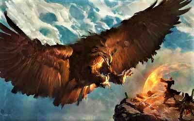

Уникальные животные

Флавны
Большие, размером с овцу, жуки. Передняя часть тела покрыта панцирем, однако брюшко оголено — имеется полупрозрачная внешняя оболочка, сквозь которую хорошо видно желтоватую массу внутри. Эта часть куда больше, чем передняя, защищённая. Большая часть органов сосредоточена в передней части, не пригодной в качестве еды. Брюшко представляет собой смесь внутренней жидкости, которую называют фурс, и относительно твёрдых желеобразных кусков, напоминающих по плотности и свойствам желе, — флавнятина.
Не способные летать, флавны питаются листвой и травой при помощи жвал. По сути они довольно безобидны и дружелюбны, несмотря на отталкивающий на первый взгляд вид. В случае агрессии склонны убегать, хотя могут и защищаться — причём жвалы могут быть очень и очень опасны. Хорошо поддаются разведению. Известны единичные случаи, когда флавнов держали как домашних животных: серьёзной дрессировке они не поддаются, и практических применений в хозяйстве у них нет.
Примечание: в чистом виде фурс довольно густой и очень похож на патоку. Обладает специфичным вкусом, очень сладкий. Его обычно разбавляют с водой или молоком, в некоторых случаях подвергают брожению и делают алкогольный напиток.
Горные яки
Выносливые ездовые животные. Несмотря на довольно густой шерстяной покров, хорошо переносят жару и холод. Очень массивны, могут переносить очень тяжёлые грузы на большие расстояния. Разводят их в основном в горах, где они изначально и жили. Травоядны, очень хорошо поддаются тренировке — известны даже комические случаи, когда из них во время Войны Освобождения делали импровизированные живые тараны. Мясо и молоко их пригодны в пищу, но имеют крайне специфичный вкус, из-за чего очень нераспространены.
Улдуры
Внешне они напоминают коров, однако шкура обычно одноцветна. На голове, в области рта, находятся крупные жвалы, напоминающие флавновские. Миролюбивы, разводятся как домашний скот. По некоторым теориям, являются результатом скрещивания флавна и коровы, хотя мало кто воображает, как можно скрестить зверя и насекомое — отсюда и теория о том, что это неудачный магический эксперимент. У детёнышей жвала очень слабые, и переработка листвы даётся им очень нелегко — обычно животноводы сами перемалывают траву для молодых улдуров, поэтому этот вид очень и очень зависит от человека. Используются молоко, мясо и шкуры, по свойствам очень схожие с обычными коровами.
Пнорхы
Большие змеи, живущие в песках. Охотятся на мелких животных — от простого удава их отличает довольно большое и массивное тело. Их часто употребляют в пищу, однако мясо на Поэдруме не так распространено, и обычно запечённый пнорх играет роль праздничного блюда. Обычно их специально морят голодом, затем резко откармливают начинкой будущего блюда — и, стоит им только проглотить пищу, как их убивают, а после чего зажаривают.
Хужи
Напоминают обычных лягушек, однако обладают довольно забавным свойством защиты: имеют большие наросты у себя на спине, напоминающие камни. Могут зарываться в земле или даже песке, маскируясь под обычный камень. Питаются в основном мелкими летающими насекомыми.
Рух
Огромная, до пяти метров в высоту птица. Внешне близка к орлам и имеет сходные с ними повадки. До прихода Ордена к власти игнорировались, поскольку случаи нападения на людей были крайне редки, а их мясо довольно жёсткое и безвкусное, что определяло безразличный нейтралитет. Сейчас происходят тренировки некоторых особей: в наличии Ордена 15 птиц, и часть из них транспортирует по континенту посылки и письма между городами. Наиболее крупные особи отбираются в особый военный отряд, где их приручают к ношению наездника на спине. Однако это направление только начало своё развитие, и даже Орден видит в этом лишь очередной эксперимент.
География Мериона · Поэдрум · Уникальные животные